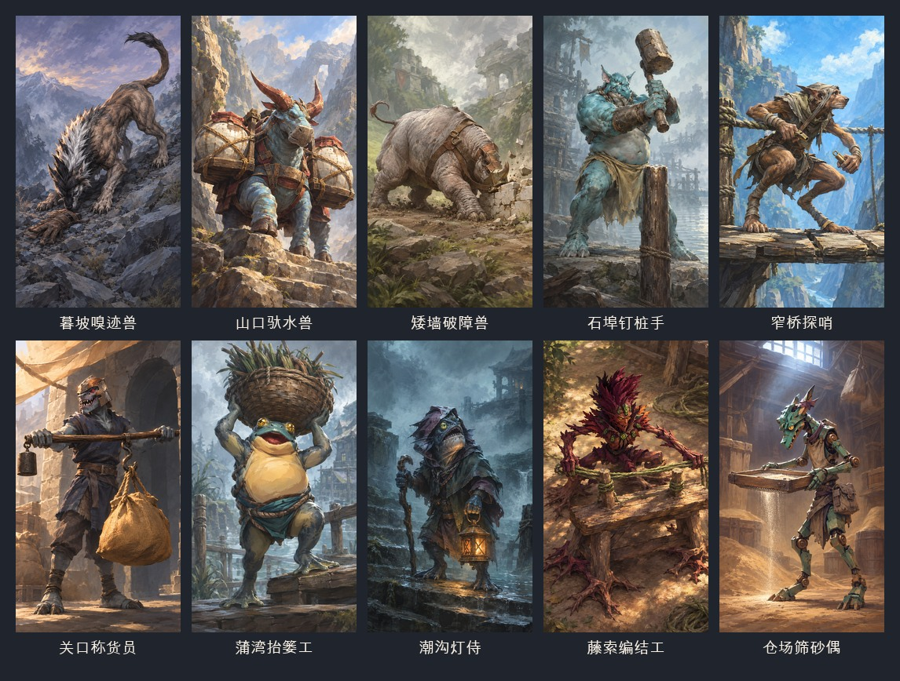

暮坡嗅迹兽
镜头俯侧全身，前身低、尾巴抬起
用光傍晚冷天光，余晖只点亮鬃尖
主色灰褐毛、白鬃、石蓝暮坡
生成描述
为yf-artifact画Dota世界观普通非人单位卡图，工作名「暮坡嗅迹兽」。一头黑额白色长鬃的普通四足巡兽，肩高臀低、长尾、脚爪宽大。它在碎石山坡上嗅一只倒下的旧皮手套，鼻尖贴近手套，前腿弯曲，后腿站直，尾巴高于臀部形成反向弧。相机从右上方侧俯，看清全身与四足，躯干斜贯画面。山坡偏石蓝灰，远处是明亮灰紫天空，鬃毛只在后颈顶端有一线温暖余晖。焦点在鼻子、手套和压在碎石上的前爪。
已完成 10 张，Migoo Flare，768×1360。参考来自Dota官方漫画配角、生物与活动对话立绘。每张按角色参考、成图和48像素小卡对照，点图可打开原图。

镜头俯侧全身，前身低、尾巴抬起
用光傍晚冷天光，余晖只点亮鬃尖
主色灰褐毛、白鬃、石蓝暮坡
为yf-artifact画Dota世界观普通非人单位卡图，工作名「暮坡嗅迹兽」。一头黑额白色长鬃的普通四足巡兽，肩高臀低、长尾、脚爪宽大。它在碎石山坡上嗅一只倒下的旧皮手套，鼻尖贴近手套，前腿弯曲，后腿站直，尾巴高于臀部形成反向弧。相机从右上方侧俯，看清全身与四足，躯干斜贯画面。山坡偏石蓝灰，远处是明亮灰紫天空，鬃毛只在后颈顶端有一线温暖余晖。焦点在鼻子、手套和压在碎石上的前爪。
镜头正面偏侧完整全身，前腿抬高跨石
用光晴天清亮侧光，瓮面宽亮，鞍下整块暗
主色青蓝皮、灰白水瓮、灰红旧鞍
为yf-artifact画Dota世界观普通非人单位卡图，工作名「山口驮水兽」。一头青蓝厚皮、钝鼻、红褐长角和四条短粗腿的商队驮水兽，沿参考的非人动物结构。两只灰白圆腹水瓮放在左右平衡木架里，瓮口覆褪红布并有粗绳交叉捆紧，货架低而宽。它在山口石阶正面偏侧抬起一条前腿跨上矮石，头微侧避开狭壁。完整角尖、四足与两只圆瓮在画内，主要轮廓是左右圆瓮和中间的抬头长角。晴天侧光照亮瓮面和前腿，远处是一道浅灰山口，细部集中在绳结、瓮口水渍与皮鞍磨痕。
镜头近地完整侧视，头低肩高、前足蹬地
用光白昼阴天柔光，墙缝深暗，鼻甲小亮点
主色粉灰厚皮、米白石块、低饱和苔绿
为yf-artifact画Dota世界观普通非人单位卡图，工作名「矮墙破障兽」。一头普通驯养破障兽，参考的灰白厚皮、宽背、低头鼻角与短壮四足，戴一片旧铜护鼻甲和朴素胸带。它侧身低头，用鼻甲抵住一小段已经松动的膝高白石矮墙，前腿蹬住泥地，后腿略弯，三块小石正从墙顶滑落。低机位完整侧视，鼻角、身体与四足都在画面内，矮墙只到胸口下部，巨兽体型保持普通驮兽尺度。阴天柔光让石墙与粉灰皮形成大浅色块，墙洞和腹下是宽暗面。重点是鼻甲压痕、脚边泥屑与松动石缝。
镜头眼平三分之四，双臂举短锤、宽步站稳
用光晨雾冷漫射光，湿木头局部反亮
主色青蓝皮、苇黄腰布、灰褐木桩
为yf-artifact画Dota世界观普通非人单位卡图，工作名「石埠钉桩手」。一名青蓝皮肤、宽口獠牙、大腹粗臂的普通营地异族钉桩手，参考其厚实体态，穿苇黄麻腰布和两片软皮护腕。它站在石埠边一块平石上，宽步稳住，双手握住肩宽的短柄木槌举到胸口上方，正要落向脚前一根腰高粗木桩。三分之四眼平镜头，全身、木槌两端、双脚和木桩完整，粗臂与短槌形成上宽下窄轮廓。晨雾使背景水面浅亮，冷漫射光照脸，湿木桩顶部只有一点反光，细节集中在锤头磨面、手掌受力与护腕缝线。
镜头桥面高度侧视，长腿半蹲、长臂扶绳
用光晴午天光，桥板下硬阴影，远景明亮
主色土褐短毛、灰绿桥绳、淡青峡谷
为yf-artifact画Dota世界观普通非人单位卡图，工作名「窄桥探哨」。一个瘦长褐毛的营地非人生物，长兽形口吻、弯腿、长臂，沿参考中夸张的非人体态。它半蹲在窄木吊桥的桥头，一只长手抓住胸高边绳，另一只手拿一枚小铜哨，头偏向桥的远端，双脚分别踩在两块错位桥板上。相机与桥面齐平，侧视完整头、双脚、尾部若有和绳端，长臂和弯腿围出大空隙。晴午天光让桥板上表面亮，下侧有清楚短硬影，背景是淡青峡谷和少量白云。细部只保留铜哨、抓绳指节和桥板裂口。
镜头平视斜侧，双臂展开托一把杆秤
用光午后棚布透光，脸部柔亮，身后冷灰阴影
主色灰蓝皮、靛青布衣、浅麦黄货袋
为yf-artifact画Dota世界观普通非人单位卡图，工作名「关口称货员」。一名普通灰蓝皮肤獠牙族称货员，保留第一张参考的窄额、獠牙口吻和旧包颊铁盔，脸形明确非人。它穿靛青短布衣与简单皮腰带，身形比门卫略瘦，站在关口石墙边，两手配合托住一把横向木杆秤，秤钩下挂一只小麦黄色粗布货袋，杆另一端是无纹铁秤砣。平视斜侧全身，两臂展开、秤杆近水平，头顶、秤端、双脚完整，袋子到膝高并与腿分开。午后阳光穿过浅色棚布柔亮地照脸和手，身后冷灰门洞干净。重点刻画秤钩、手指和布袋受重褶皱，所有表面没有文字数字。
镜头低位三分之四，圆腹直立、双臂托高圆篓
用光阴天柔光，水面淡青反光，腹下软暗
主色灰蓝蛙背、淡黄腹部、苇褐篓
为yf-artifact画Dota世界观普通非人单位卡图，工作名「蒲湾抬篓工」。一名Dota水岸聚落的普通蛙族搬篓工，高位分眼、宽嘴、灰蓝斑背、淡黄圆腹和大蹼足，沿参考蛙族的轮廓。它直立走上两级低木阶，双手把一只装满芦茎的宽口圆篓托到头顶偏后，肘部向左右张开，一只蹼足抬上阶面，另一只留在下方。低位三分之四全身，篓顶、双肘、圆腹和双脚完整，身体与圆篓构成上下两个大圆。背景是灰绿水面与低木栏，阴天柔光配水面淡青补光，焦点在蹼指、篓沿绑口和脚掌受压处。
镜头眼平正侧之间，短身撑杖、灯笼低垂
用光夜雾冷环境光，低处一盏暖灯只照手与脸下沿
主色灰紫帽、暗青皮、乳白雾与小暖灯
为yf-artifact画Dota世界观普通非人单位卡图，工作名「潮沟灯侍」。一名普通鱼形非人灯侍，参考鱼形面部、宽嘴、侧鳍、低矮身体与短蹼足，穿灰紫防雨帽和暗青短外套。帽檐向后翻起，露出眼睛、宽口和颊鳍。它一手拄短弯木杖，另一手把一只朴素四方铜灯低提到膝旁，站在潮沟石阶上偏头听水声。相机眼平略侧，头、杖端、灯底与双脚都在画内，灯与身体分开。乳白夜雾和深青石阶形成冷色空间，灯只给手、下颌和一小块地面暖光。精细处集中在鱼鳍、灯提环和潮湿衣褶。
镜头高位斜俯，矮蹲根足、长枝臂横拉藤索
用光棚外漫射日光，木销与枝指局部亮，叶冠沉暗
主色暗红叶、浅木褐、冷绿藤绳
为yf-artifact画Dota世界观普通非人单位卡图，工作名「藤索编结工」。一名普通树形藤索编结工，沿第一张参考的暗红叶状冠、木节面部和枝条肢体，设计成短木干躯体、粗分叉根足与两条很长的细枝臂。它矮蹲在低木台前，用两手把一束冷绿色藤索横向拉紧，藤索绕过台面上两枚粗木销，脚根撑住台腿。相机从高位斜俯看完整树形身体与工具，根足向两侧散开，枝臂横拉形成宽而低的轮廓。棚外柔日光照木台、木销和细枝指，叶冠保持深暗红，背景只留浅褐地面与松散绳圈。细节集中在绳纤维、木销划痕与枝节。
镜头完整侧视直立，折角双臂平托筛盘
用光明亮高窗冷白光，筛盘上缘锐亮，身侧柔暗
主色铜绿金属、灰白筛砂、浅赭地
为yf-artifact画Dota世界观普通非人单位卡图，工作名「仓场筛砂偶」。一具Dota活动配角体态的低阶机械狗头人筛砂偶，沿参考的尖长头壳、狭躯干、细长折角四肢与清楚金属关节，铜绿外壳，腰侧系灰布工具袋。它完整侧身站立，双臂在腰前平托一只宽而浅的木框筛盘，正把细灰白砂从筛底摇落，双脚前后错开，脖颈向前伸看筛面。头壳、筛盘两端和双脚都在画内，直立身体、折臂和宽筛盘形成L形外轮廓。仓场高窗的冷白光从上方落在头顶和盘沿，浅赭地面反射柔光，筛下只有一小束落砂。细节集中在盘网、机械指节与脚踝磨损。